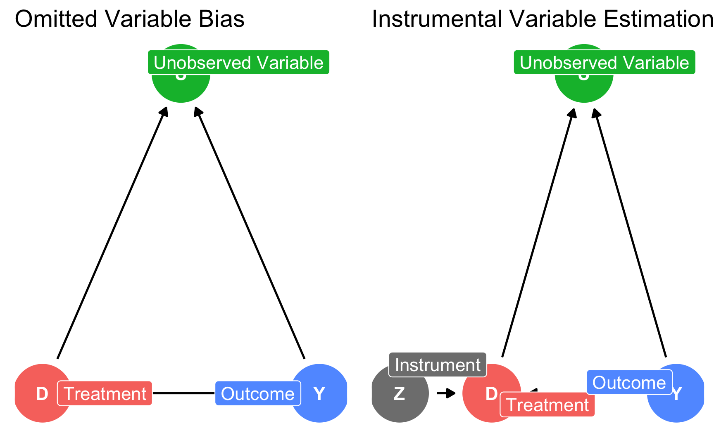
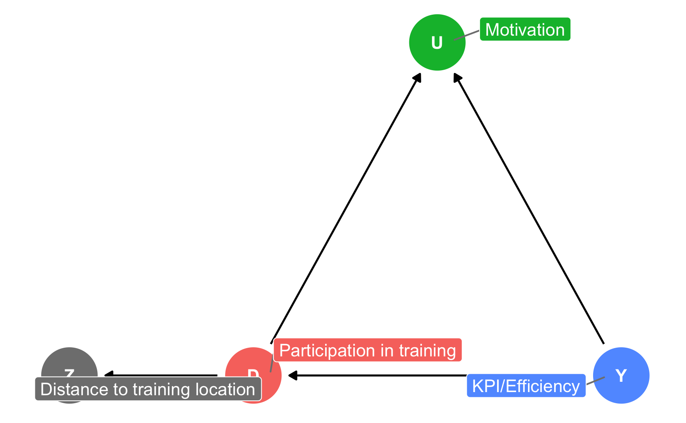
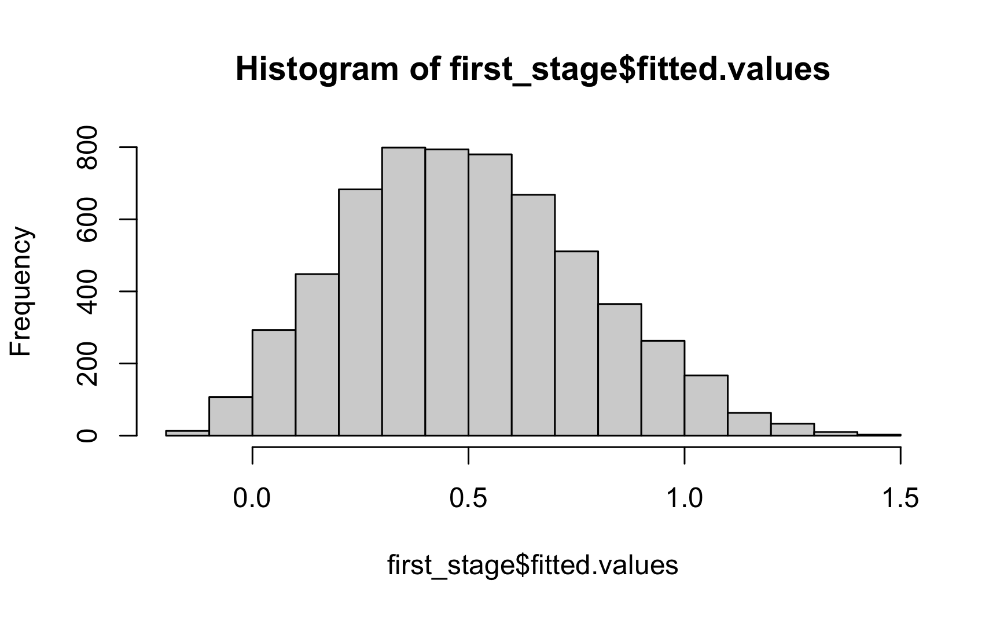
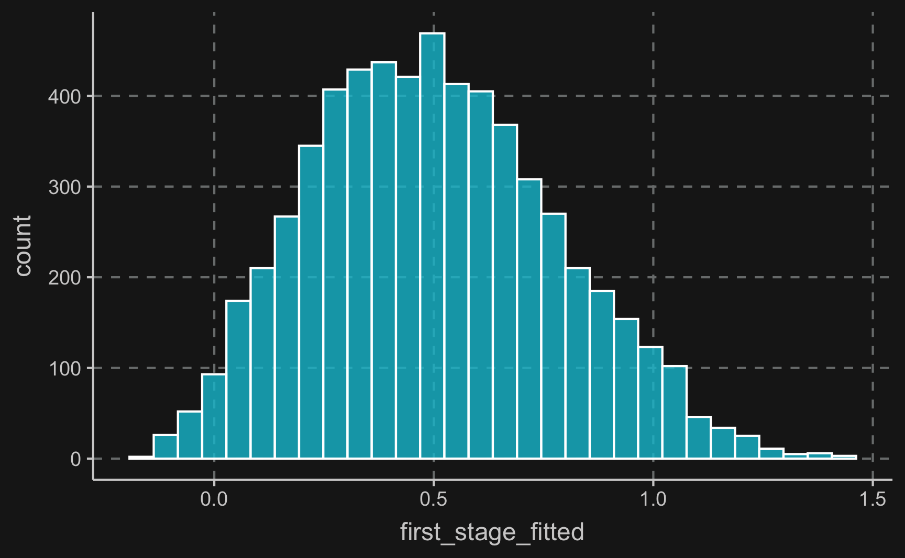

Instrumental Variables
Introduction
The method we introduce in this chapter is called instrumental variables estimation (IV) and is a non-experimental methods used to identify causal effects in observational studies with unobserved confounders.
Heavily used in economics and probably one of the most important research designs, it controls for omitted variable bias. Not being able to close the backdoor path through the omitted variable between treatment and outcome due to the omitted variable not being measured, IV introduces an additional variable, the so called instrument or instrumental variable,which affects the outcome only through the treatment variable.
The instrumental variable is exogenous, i.e. there is no other variable in the mode influencing the value of the instrument. Thus, it mimics an experiment by exploiting the exogenous variation in treatment due to the instrument and disregarding endogenous variation from unobserved confounders.
IV can be illustrated using DAGs. On the left, there is a potential initial situation you could find yourself in: you want to examine the effect of \(D\) on $Y$, but unfortunately, there is an unobserved confounder (=omitted variable) that you would have to adjust for to identify the direct effect. As \(U\) is unobserved, there is no way to close the backdoor path by methods like matching, regression etc. This is where IV comes to rescue.
As you can see on the right, now \(D\) mediates between an instrument \(Z\) and outcome \(Y\). There is no direct path between \(Z\) and \(Y\) and therefore \(Z\) affects \(Y\) only through \(D\). For the instrument validity, there are a few assumptions that need to be fulfilled, which we discuss later in detail but summarizing, we need
Relevance: \(Z \rightarrow D, \,\,\, Cor(Z,D) \neq 0\) (testable)
Excludability: \(Z \rightarrow D \rightarrow Y,\,\, Z \not\to Y, \,\,\, Cor(Z, Y|D) =0\) (partly testable)
Exogeneity: \(U \not\to Z, \,\,\, Cor(Z, U)=0\) (not testable)
That are the main requirements of IV. To go through them in-depth and also explain how to estimate the effects, we’ll go through an example in the following section..
Application
Let us imagine the following situation. You are manager of a company that allows its workers to work remotely from any location. Now you want to implement a voluntary training program to improve the skills of your workforce. Other than the general work, trainings are held in a number of locations on-site. To measure the effect of your training program on a worker’s output, you are able to collect
- \(D\): whether an individual worker has participated in the training program
- \(Y\): his/her work output (something like a key performance indicator (KPI))
Under what circumstances can we estimate the causal effect from \(D\) to \(Y\) knowing only this information?
Click for Answer
If we can assume no selection on unobservables, estimating a causal effect is possible. That means, that no other unmeasured variable confounds the relationship between treatment and outcome.
A major factor \(U\) influencing both treatment \(D\) and outcome \(Y\) as motivation as more more motivated workers are more likely to participate in a training program to improve their skills and also more likely to be more productive. Unfortunately, motivation is variable that is very hard to measure. Workers with a low level of motivation will try to hide it while workers with a high level of motivation might not be able to show it.
Therefore, motivation \(U\) opens a backdoor path between \(D\) (= program participation) and \(Y\) (worker output) which cannot be closed. To eliminate the bias caused by an omitted variable, the strategy is to use an instrument.
However, we can exploit the fact that the distance to training location is known. At first glance, distance could serve as an instrument \(Z\) as it related to \(D\) (close distance to training location might increase participation likelihood) and is not otherwise related to outcome \(Y\).
# Instrumental Variable Estimation - Application
iv_expl <- dagify(
D ~ Y,
U ~ Y,
U ~ D,
Z ~ D,
exposure = "D",
latent = "U",
outcome = "Y",
coords = list(x = c(U = 1, D = 0, Y = 2, Z = -1),
y = c(U = 1, D = 0, Y = 0, Z = 0)),
labels = c("D" = "Participation in training",
"Y" = "KPI/Efficiency",
"U" = "Motivation",
"Z" = "Distance to training location")
)
ggdag_status(iv_expl, use_labels = "label", text = T) +
guides(color = "none") +
theme_dag()
For an instrument to be valid, there are five requirements that need to be met.
Stable unit treatment value assumption: Potential outcomes for a unit do not vary with treatments assigned to other units. Note that it does not mean that treatment assignment is independent across units. For example, if a worker participates in training because his/her colleague does so, it is not a violation of the assumption.
Independence assumption: There is no confounding between instrument \(Z\) and treatment \(D\) and also no confounding between \(Z\) and outcome \(Y\). In our application, it means there is no factor that both influences the proximity to the closest training location and program participation or worker efficiency. If we want to think of a potential violation, we could imagine more motivated workers living closer to a training location (e.g. if the headquarter is a training location) and thus, there would be confounding between \(Z\) and both treatment assignment and outcome.
Exclusion restriction: As already mentioned above, the instrument does not directly affect outcome, but only through the treatment. Other than the consideration in 2), there is no obvious reason why living closer or further away from a training location would affect an individual worker’s efficiency. Please note that this assumption is not testable.
Instrument relevance: There should be a correlation of \(Z\) and \(D\). The stronger the association, the more powerful an instrument is. We will later check the correlation between both variables (in the so called “first stage”).
Monotonicity assumption: Instrument (weakly) operates in same direction, i.e. it might be the case, that the instrument does not affect all units, but for all units that are affected are affected in the same direction.
Using the framework below, monotonicity is satisfied, if there are no defiers. Let’s define what defiers are. In general, there are four types of observation units with regard to their value of \(Z\) and \(D\).
Compliers: \(D\) is affected by \(Z\) in “correct” direction.
Defiers: \(D\) is affected by \(Z\) in “wrong” direction.
Never takers: \(D = 0\) in all cases, regardless of \(Z\).
Always takers: \(D = 1\) in all cases, regardless of \(Z\).
If all of the assumptions are satisfied, we are able to estimate the average treatment effect for compliers, which is also known as local average treatment effect (LATE). With regard to our application, we estimate the average treatment effect for individuals whose decision to participate was affected by the their distance to the training location.
Exploration
For the sake of explanation, we generate a synthetic data set with the variables \(Z\), \(D\) and \(Y\) as defined above. We also include the unobserved variable \(U\). This way, we can better explain where the bias comes from and how it affects the estimated treatment effect. The true treatment effect, which is the direct effect of \(D\) on \(Y\), is set to 1. We also add some random noise, so relationships are not perfect and what you will see is close to practice.
head(df)# A tibble: 6 × 4
distance program motivation kpi
<dbl> <dbl> <dbl> <dbl>
1 0.741 0 0.612 -0.626
2 0.622 1 0.588 2.44
3 0.638 1 0.822 2.92
4 0.687 0 0.588 1.93
5 0.535 1 0.484 0.777
6 0.622 0 0.611 0.386From the table, you already have an idea what the data structure and types look like. But when developing our analysis strategy, we are mainly interested in relationships between the variables, so let’s have a look at the correlation matrix. Some requirements for a valid IV strategy can already be checked with it. Please also note, that we include \(U\) here, but in general, you do not observe \(U\), which is the reason why researchers came up with the idea of IV in the first place. It is just for the purpose of explanation that we include it here.
From the correlation matrix, we can take a few important insights. There is a significant negative correlation between distance and program participation, which is also called first-stage and confirms the relevance of our instrument. The distance to the next training location does affect decision to participate in a training. This is assumption (4) from above.
Having a synthetic data set, we can also see that our instrument is uncorrelated with the unobserved variable motivation, which means there is no confounding as stated in assumption (2). Usually, however, we would not be able to test this assumption due to an unobservable variable not being observed. Moreover, there could be additional confounders. With merely statistical concepts, we cannot prove that the effect of \(Z\) on \(Y\) goes only through \(D\).
Corresponding to our DAG, we also see that there both program participation and KPI are correlated with motivation, which thus opens another path between treatment and outcome. Being unable to close this path, we actually need an instrument in this situation.
# Correlation matrix
cor(df) %>% round(2) distance program motivation kpi
distance 1.00 -0.56 -0.02 -0.23
program -0.56 1.00 0.41 0.48
motivation -0.02 0.41 1.00 0.30
kpi -0.23 0.48 0.30 1.00In general, it is very useful to also plot the data to check relationships between variables. It confirms what we have seen in the correlation matrix.
Modeling
Confounding
When you plausibly argued that your instrument is valid, you would usually perform 2SLS, which is short for Two Stage Least Squares. We’ll come to that shortly, but because we have all the data, we can also check what the bias would be in case we would not use an instrument and ignore the confounder.
Remember, the true treatment effect is 1 in this case. Therefore, when we regress \(Y\) on \(D\) and \(U\), we should be able to recover this effect. And when you look at the regression output, in fact, we do. It is not exactly equal 1, but that is due to sampling noise.
# First of all, let's look at the coefficients of the "full" (but unobservable)
# model. It is unobservable, as it includes motivation, which in reality is
# a variable that is very hard to collect or measure.
# Coefficients are expected to be close to what he have defined in the data
# generation section.
model_full <- lm(kpi ~ program + motivation, data = df)
summary(model_full)
Call:
lm(formula = kpi ~ program + motivation, data = df)
Residuals:
Min 1Q Median 3Q Max
-3.572 -0.680 -0.005 0.674 3.491
Coefficients:
Estimate Std. Error t value Pr(>|t|)
(Intercept) -0.0590 0.0564 -1.05 0.3
program 0.9898 0.0284 34.91 <2e-16 ***
motivation 1.1313 0.1086 10.41 <2e-16 ***
---
Signif. codes: 0 '***' 0.001 '**' 0.01 '*' 0.05 '.' 0.1 ' ' 1
Residual standard error: 1 on 5997 degrees of freedom
Multiple R-squared: 0.245, Adjusted R-squared: 0.245
F-statistic: 973 on 2 and 5997 DF, p-value: <2e-16But what would happen if we ignored the confounder \(motivation\) and only regress \(Y\) on \(D\)? We do not close the backdoor path and consequently, the effect is overestimated.
We can see that the coefficient for program participation is higher than expected, i.e. it has an upward bias. This is because, it takes some of the variation that is actually attributable to motivation into the coefficient of program participation. This confirms the need to include an instrument to model causal effects when there is no way to include the confounder.
# Modeling the data without the unobservable variable, i.e. only including
# program participation in this case, returns a biased coefficient as the
# relationship between program and the outcome is biased by a collider.
model_biased <- lm(kpi ~ program, data = df)
summary(model_biased)
Call:
lm(formula = kpi ~ program, data = df)
Residuals:
Min 1Q Median 3Q Max
-3.631 -0.688 -0.007 0.688 3.658
Coefficients:
Estimate Std. Error t value Pr(>|t|)
(Intercept) 0.4963 0.0185 26.9 <2e-16 ***
program 1.1101 0.0261 42.5 <2e-16 ***
---
Signif. codes: 0 '***' 0.001 '**' 0.01 '*' 0.05 '.' 0.1 ' ' 1
Residual standard error: 1 on 5998 degrees of freedom
Multiple R-squared: 0.231, Adjusted R-squared: 0.231
F-statistic: 1.8e+03 on 1 and 5998 DF, p-value: <2e-162SLS
Two Stage Least Square is the estimation technique for IV and consists, as it names suggest, of two stages. In the first stage, the treatment variable is regressed on the instrument and in the second stage, the estimated values of the first stage are used as a regressors for the outcome. It sounds a little bit confusing, so let’s write it down. Remember, \(D\) is our treatment, \(Z\) the instrument and \(Y\) the outcome.
First stage:
\[ d_i = \gamma_0 + \gamma_1z_i + \nu_i \]
Second stage:
\[ y_i = \beta_0 +\beta_1\widehat{d_i} +\epsilon_i \]
Lower cases indicate single observations, so \(i\) indicates for example the row in our data set. What is important to note, is that in the second stage, we do not use \(d_i\), but instead \(\widehat{d_i}\). The hat indicates, that these are fitted values from the first stage.
We can do 2SLS manually in R, but for reasons I will get to later, it is recommended to use libraries built to run 2SLS. However, for purpose of explanation, we’ll do it also manually here.
First stage: As already discussed, regress treatment variable on instrument and obtain the fitted model. The model coefficient returned by the model summary should be significant, otherwise there is reason to doubt the relevance and validity of the instrument. You can also look at the F-statistic, which should be above 10.
Here, the instrument is highly significant. The higher the distance, the lower the likelihood of participation.
!!! log reg?
# First stage
first_stage <- lm(program ~ distance, data = df)
summary(first_stage)
Call:
lm(formula = program ~ distance, data = df)
Residuals:
Min 1Q Median 3Q Max
-1.2004 -0.3334 -0.0373 0.3509 1.0397
Coefficients:
Estimate Std. Error t value Pr(>|t|)
(Intercept) 1.4553 0.0192 75.8 <2e-16 ***
distance -1.5999 0.0309 -51.8 <2e-16 ***
---
Signif. codes: 0 '***' 0.001 '**' 0.01 '*' 0.05 '.' 0.1 ' ' 1
Residual standard error: 0.42 on 5998 degrees of freedom
Multiple R-squared: 0.309, Adjusted R-squared: 0.309
F-statistic: 2.68e+03 on 1 and 5998 DF, p-value: <2e-16Let’s look at the fitted values from the first stage. The fitted values is what you get when you use the calculated coefficients and for each observation compute what the model predicts as an expected value. So, they are most likely a different from the actual values. How different they are depends on the goodness of fit of your model. This is why it is important that your instrument has a good explanatory value for the treatment variable.
!!! Plot residuals?
hist(first_stage$fitted.values)
ggplot(tibble(first_stage_fitted = first_stage$fitted.values),
aes(x = first_stage_fitted)) +
geom_histogram(color = "white", alpha = .8)`stat_bin()` using `bins = 30`. Pick better value with `binwidth`.
Now we continue to use the fitted values from the first stage and plug it in the second stage to get the local average treatment effect. We see that the coefficient for the effect is close to one as constructed and we were able to eliminate the omitted variable bias.
# Second stage
second_stage <- lm(df$kpi ~ first_stage$fitted.values)
summary(second_stage)
Call:
lm(formula = df$kpi ~ first_stage$fitted.values)
Residuals:
Min 1Q Median 3Q Max
-4.051 -0.757 -0.009 0.753 4.257
Coefficients:
Estimate Std. Error t value Pr(>|t|)
(Intercept) 0.5669 0.0298 19.0 <2e-16 ***
first_stage$fitted.values 0.9689 0.0521 18.6 <2e-16 ***
---
Signif. codes: 0 '***' 0.001 '**' 0.01 '*' 0.05 '.' 0.1 ' ' 1
Residual standard error: 1.1 on 5998 degrees of freedom
Multiple R-squared: 0.0545, Adjusted R-squared: 0.0543
F-statistic: 345 on 1 and 5998 DF, p-value: <2e-16However, it is recommended to use functions, like e.g. iv_robust() from the estimatr package, as it yields correct standard errors. You see that the coefficient is the same but the standard errors slightly differ.
# Using our instrument (distance to training location), we try to eliminate the
# bias induced by the omitted variable. If all assumptions regarding the validity
# of our instrument are met, the resulting coefficient should be
# close to what we have defined above.
library(estimatr)
model_iv <- iv_robust(kpi ~ program | distance, data = df)
summary(model_iv)
Call:
iv_robust(formula = kpi ~ program | distance, data = df)
Standard error type: HC2
Coefficients:
Estimate Std. Error t value Pr(>|t|) CI Lower CI Upper DF
(Intercept) 0.567 0.0267 21.2 1.13e-96 0.515 0.619 5998
program 0.969 0.0466 20.8 7.23e-93 0.878 1.060 5998
Multiple R-squared: 0.228 , Adjusted R-squared: 0.227
F-statistic: 433 on 1 and 5998 DF, p-value: <2e-16Conclusion
IV is an extremely popular research design but you have to be very careful when using it - particularly due to the fact that some of the necessary assumptions are untestable. This is why it is essential to have knowledge about the studied phenomenon to convincingly argue why the research design is valid and assumptions are plausible.
Moreover you have to question yourself, whether you measure the effect you are actually interested in. As you only measure the effect for compliers, for people who are affected by the instrument, the treatment effect is a local average treatment effect (LATE). In case of heterogeneous treatment effects across the whole population, the LATE is different from the ATE.
IV is still a very active research field and you can extend it in variety of ways like for example including multiple instruments.
Assignment
Imagine, you have developed an app and you are already having an active user base. Of course, some users are more active than other users and users might use the app for different purposes. In general user behavior likely depends on a lot of unobserved characteristics.
Your goal is to keep users as long as possible on the app to maximize your ad revenues.
Now you want to introduce a new feature and see how it affects the time spent on the app. Simply comparing users who use the newly introduced feature to users who don’t would result in a biased estimate due to the confounders regarding activity above.
Therefore, you perform a so called randomized encouragement trial, where for a random selection of users, a popup appears when opening the app and encourages these users to test new feature.
After a while you collect data on users’ activity, if they were encouraged and if they used the new feature. Try to think about how you could use the IV framework to find the causal effect. Also, compare what effect a naive comparison would yield and compare it to the IV estimate.